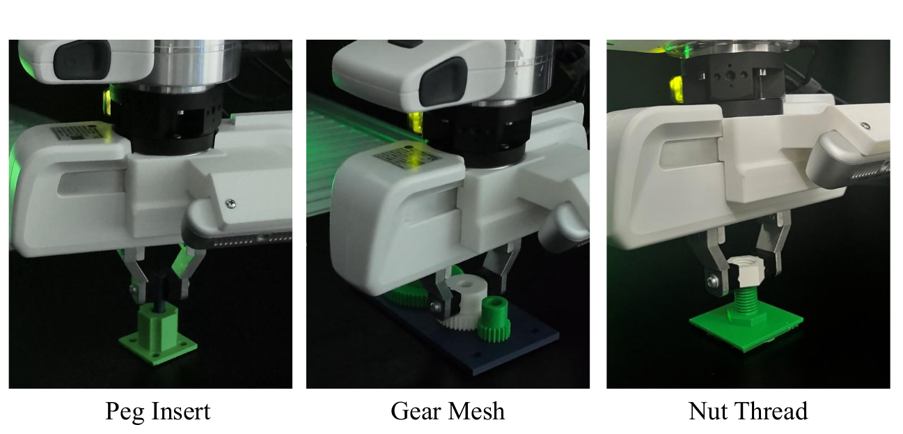
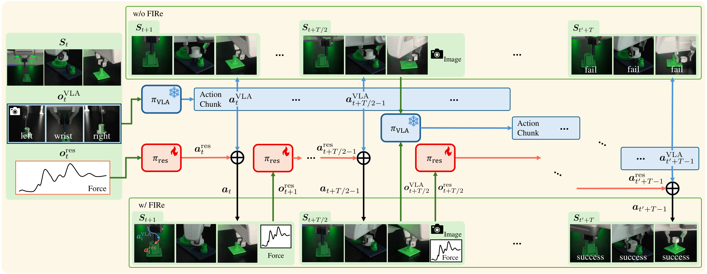
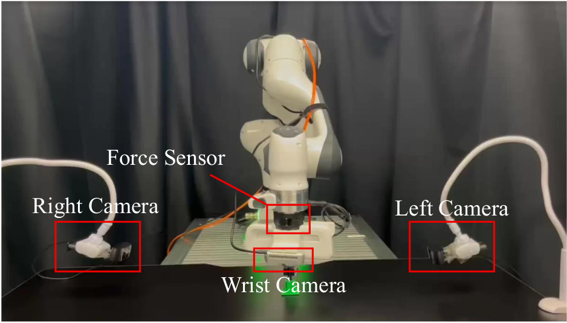
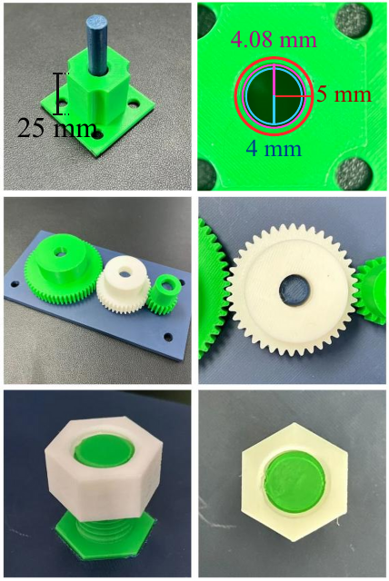
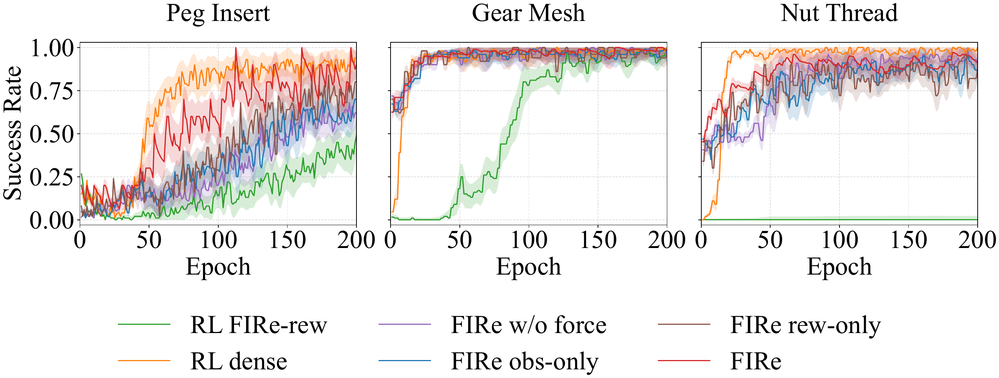
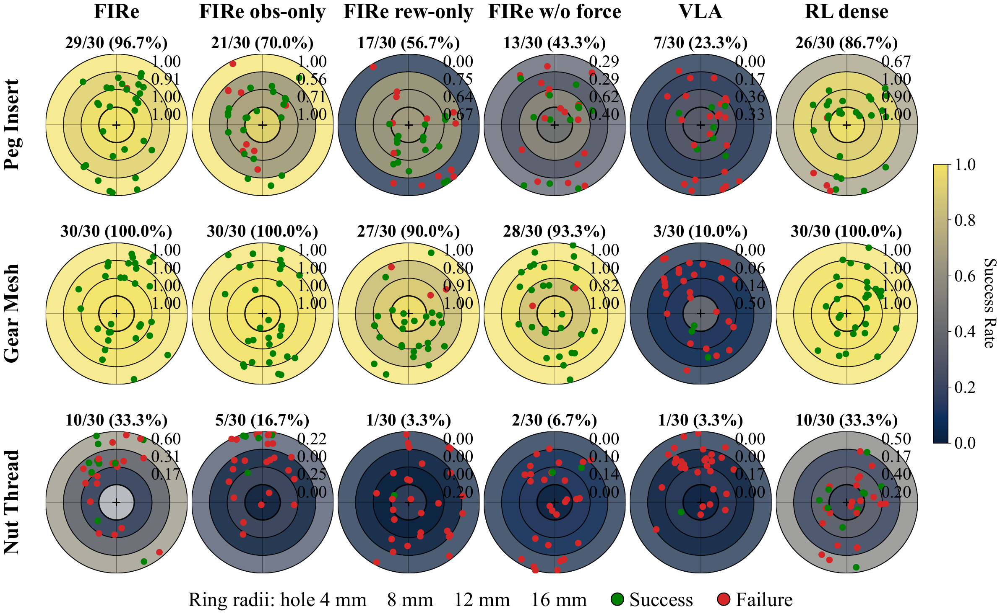
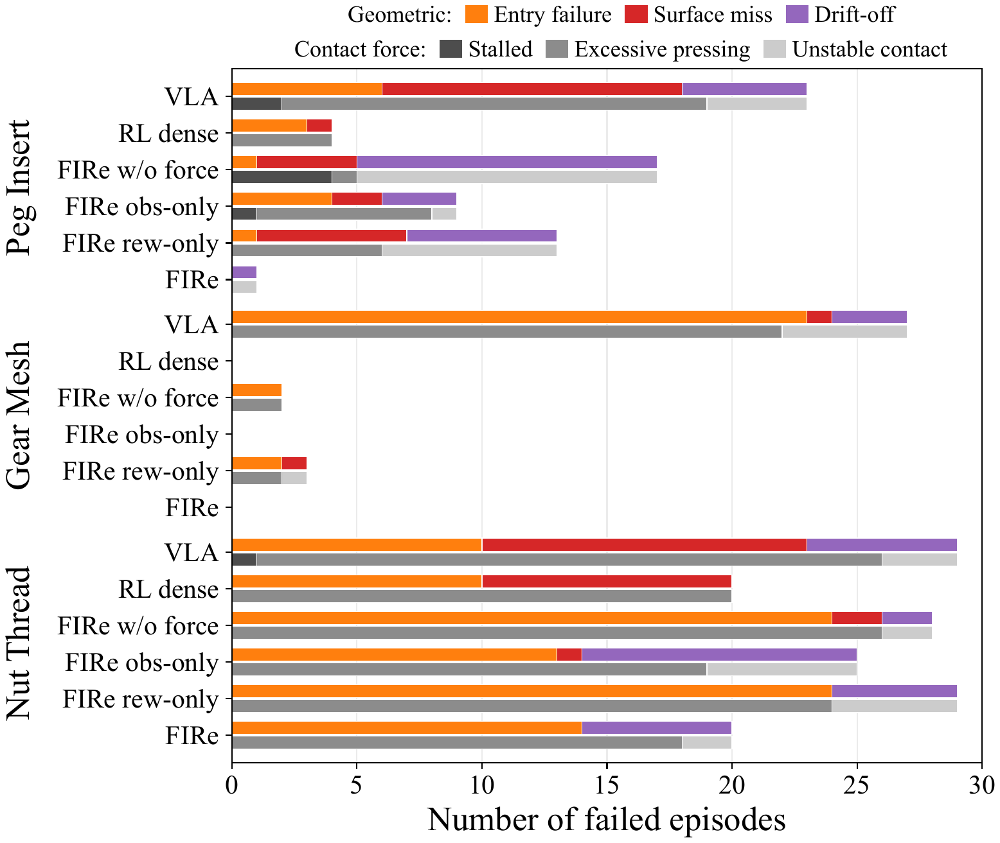
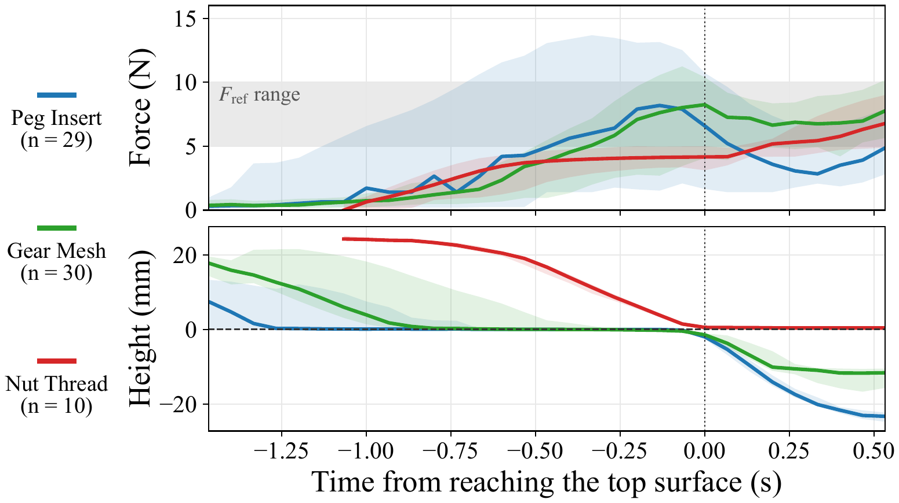

FIRe
Force-Informed Residual Policyfor Contact-Rich Manipulation
with Vision-Language-Action Models
A frozen, fine-tuned VLA plans long-horizon action chunks,
and a force-aware residual policy trained in simulation
corrects every action at the control rate,
with no task-specific dense reward.
Background: extra demo, not in the paper.
Zero-shot on an unseen object: the robot inserts a DC barrel plug,
and the bulb lights up only when the plug is fully seated.
The VLA was fine-tuned on demonstrations of this task;
the FIRe residual, trained in simulation for Peg Insert,
never saw this object and runs without retraining.
Overview video
Abstract
Vision-Language-Action (VLA) models adapt to manipulation tasks from a few demonstrations, but remain brittle in contact-rich assembly, where visual observations fail to capture contact state and chunked VLA actions cannot react at the control rate. We present Force-Informed Residual Policy (FIRe), which augments a frozen, fine-tuned VLA with a force-aware residual RL policy. The VLA provides long-horizon action chunks, while the residual policy runs at every control step, observes force, and adds bounded corrections through a slow-fast asynchronous loop. Trained in simulation with only a sparse task-success reward and a task-agnostic force-aware dense reward, FIRe transfers zero-shot to a torque-controlled manipulator in the real world. On three real-robot assembly tasks, Peg Insert, Gear Mesh, and Nut Thread, it improves success over the VLA-based policy by an average of 64.5 percentage points and up to 90.0, reaching success rates that did not differ significantly from those of an RL policy trained with task-specific dense rewards, without requiring such reward engineering. Moreover, when the residual policy trained with GR00T for each task is applied to π0.5 and OpenVLA without retraining or architectural changes, it improves the success of all three backbones on all tasks.
VLA chunks cannot feel contact,
and RL needs a reward engineered for every task
- Rely on vision and language, so force sensing goes largely unused.
- Execute action chunks open-loop and cannot react to contact events at the control rate.
- The end-effector occludes exactly the region where precision matters.
- Teleoperated demonstrations of contact-rich skills are costly to collect.
- Can exploit force feedback for reactive contact control.
- Needs a dense reward engineered anew for every task.
- Suffers from high sample complexity in continuous state-action spaces.
FIRe combines the two: a frozen, action-head fine-tuned VLA provides long-horizon guidance,
while a force-aware residual policy, trained in simulation with only a sparse success reward
and a task-agnostic force-aware reward, corrects the trajectory at every control step
and transfers zero-shot to a real Franka FR3.

A force-aware residual corrects a frozen VLA
at the control rate

FIRe forms the final control command by adding the corrective output of a residual policy to the base action of a frozen VLA. The VLA generates an action chunk of length \(T\) from visual and language inputs and functions as a trajectory planner providing long-horizon guidance; the residual policy \(\pi_{\mathrm{res}}\) observes proprioception and contact force at every control step and functions as a closed-loop contact controller. The VLA weights stay frozen; only its action head is fine-tuned before freezing. GR00T is the primary backbone, and the residual policy trained with GR00T is also applied to \(\pi_{0.5}\) and OpenVLA without retraining.
Two policies, two observations
\( o_t^{\mathrm{VLA}} = \{\, \{I_k\},\; p_{ee}^{abs},\; \ell \,\} \)
RGB images \(\{I_k\}\) from two external cameras and one wrist camera, the absolute end-effector pose \(p_{ee}^{abs} \in \mathbb{R}^7\), and a natural-language task instruction \(\ell\). No force; read only when a new chunk is generated.
\( o_t^{\mathrm{res}} = \{\, p_{ee}^{rel},\; v_{ee},\; F_t,\; F_{\mathrm{ref}},\; a_{t-1} \,\} \)
End-effector pose \(p_{ee}^{rel} \in \mathbb{R}^7\) with the position measured from the fixed object (e.g., the hole), end-effector velocity \(v_{ee} \in \mathbb{R}^6\), contact force \(F_t \in \mathbb{R}^3\) from the wrist sensor, the reference contact force \(F_{\mathrm{ref}}\) of the force-aware reward, and the previously executed command \(a_{t-1}\). Position, velocity, and force are expressed in the current end-effector frame.
Residual action composition
Both policies act in the same relative-pose representation, a 3-DOF position offset and a 3-DOF rotation offset of the end-effector. The residual output is a bounded correction \(a_t^{\mathrm{res}} \in \mathbb{R}^6\), so the final command is a direct sum,
executed by a task-space impedance controller at 1 kHz while the policies run at 15 Hz, with commands interpolated in between. Bounding \(a_t^{\mathrm{res}}\) keeps the VLA in charge of where the motion goes, while the residual decides how the contact is negotiated.
Slow-fast asynchronous deployment
A single VLA inference takes longer than one control step, so waiting for it would stall the controller exactly when contact demands reactivity. FIRe instead prefetches the next chunk asynchronously at the midpoint of the current one and swaps it in once the current chunk is exhausted, so the control loop never blocks and the residual keeps correcting at a fixed rate.
Algorithm 1 FIRe deployment control loop
Require: frozen VLA \(\pi_{\mathrm{VLA}}\), residual policy \(\pi_{\mathrm{res}}\), chunk length \(T\)
- observe \(o^{\mathrm{VLA}}\); \(\mathbf{a}^{\mathrm{VLA}} \leftarrow \pi_{\mathrm{VLA}}(o^{\mathrm{VLA}})\); \(i \leftarrow 0\) (initial blocking chunk)
- while episode not terminated do
- observe \(o^{\mathrm{res}}\)
- if \(i = \lfloor T/2 \rfloor\): observe \(o^{\mathrm{VLA}}\); prefetch the next chunk (non-blocking)
- if \(i = T\): swap in the prefetched chunk; \(i \leftarrow 0\)
- \(a^{\mathrm{res}} \leftarrow \pi_{\mathrm{res}}(o^{\mathrm{res}})\) (every control step)
- execute \(a = a^{\mathrm{VLA}}_{i} + a^{\mathrm{res}}\) with the task-space impedance controller
- \(i \leftarrow i + 1\)
- end while
A reward that does not need re-engineering
RL for contact-rich assembly usually depends on a dense reward engineered anew for every task. In FIRe, the goal-directed guidance such rewards normally provide comes from the VLA-based action instead, which warm-starts exploration near the goal. What remains is a sparse success indicator plus a task-agnostic force term, the FIRe reward (FIRe-rew), identical in form and hyperparameters across all tasks:
The force-aware reward is defined on the exceedance of the contact force over a reference contact-force level \(F_{\mathrm{ref}}\), \(e_t = \max\left(0,\; \lVert F_t \rVert - F_{\mathrm{ref}}\right)\), as
where \(\alpha\), \(\lambda_f\), and \(c_f\) are positive coefficients, and \(\phi_f\) is a logarithmic function of the exceedance that is zero when the contact force is at or below \(F_{\mathrm{ref}}\). The reward \(r_f\) is nonzero only for contact above \(F_{\mathrm{ref}}\), so it gives no incentive to make or maintain contact; the drive toward contact comes from \(r_s\) and the VLA-based action, which carries the policy into the contact region that completion requires.
Training: asymmetric actor-critic, zero-shot transfer
The residual policy is trained with PPO in Isaac Lab using an asymmetric actor-critic: the actor uses only the deployment-accessible observation \(o_t^{\mathrm{res}}\), while the critic additionally receives the privileged simulator state
that is, joint positions, held- and fixed-object poses, the low-level controller gain, and the pose threshold. During training, Gaussian noise with a standard deviation of 1 mm per axis is added at every step when combining the VLA action and the residual, and the initial hand pose is randomized within ±20 mm in \(x\) and \(y\) and ±10 mm in \(z\). The remaining randomization and the observation noise on the pose and force inputs follow FORGE. The trained policy is deployed zero-shot on the real Franka FR3 with no real-world fine-tuning.
Five research questions,
in simulation and on a real robot
Experimental setup

(a) Real-robot platform

(b) Task parts
(a) The real-robot platform is a Franka FR3 arm with a wrist-mounted 3-axis force sensor and three cameras. (b) The three assembly tasks are Peg Insert, Gear Mesh, and Nut Thread, which use 3D-printed parts. The circle marks the 5 mm lateral tolerance of Peg Insert.
Baselines and ablations. VLA executes the action-head fine-tuned GR00T without residual correction. RL dense is trained from scratch with a task-specific dense reward (FORGE), requiring three distinct reward functions for the three tasks, whereas FIRe uses the identical FIRe-rew on all tasks. RL FIRe-rew trains the same from-scratch controller with FIRe-rew, isolating the VLA warm-start under a matched reward. FIRe w/o force removes Ft and Fref from both the residual observation and the reward. FIRe obs-only keeps Ft in the observation but removes the force-aware reward, FIRe rew-only keeps the force-aware reward but removes Ft and Fref from the observation, and FIRe uses force in both. All methods act in the same relative-pose action space through the same impedance controller, with every learned policy clipped to the same bound, and share the same evaluation protocol per task.
Real-robot success rates are reported with 95% Wilson intervals. Success rates are compared between FIRe and each method with a two-sided Fisher exact test with Holm correction within each RQ, and per-trial continuous measures are compared between the successful and failed trials of a method with a two-sided Mann–Whitney U test.
Dense-reward-level success in simulation,
made feasible by the VLA warm-start
FIRe reached peak success rates of 100%, 100%, and 97% on Peg Insert, Gear Mesh, and Nut Thread, respectively. At the final checkpoint, its success rates on these tasks were 90%, 98%, and 91%. RL dense reached peak success rates of 94%, 100%, and 100% on these tasks, and the same values at the final checkpoint. The VLA-based policy together with a force-aware residual was thus sufficient to reach dense-reward-level performance in simulation without any task-specific reward engineering (RQ1).
Under a matched training budget (RQ2), FIRe and RL FIRe-rew use the same reward and the same action bound, and only in FIRe is the residual added to the VLA-based action, so the comparison isolates the VLA warm-start. Using the epoch at which each method first reaches 80% success: on Peg Insert, RL FIRe-rew did not reach 80% within the budget and ended training at 49%, whereas FIRe reached 80% around epoch 107. On Gear Mesh both converged, but FIRe reached 80% by epoch ~15 versus ~101 for RL FIRe-rew. On Nut Thread, RL FIRe-rew remained at 0% throughout training while FIRe reached 80% around epoch 37.

On the real robot,
FIRe improves over the VLA on every task
Across the three tasks, FIRe improved over the VLA-based policy by +73.4, +90.0, and +30.0 percentage points on Peg Insert, Gear Mesh, and Nut Thread, respectively. On every task, the 95% Wilson interval of FIRe lay above that of the VLA-based policy, and the difference was significant at p ≤ 0.022. Regarding RQ3, RL dense reached 86.7% on Peg Insert, 2.7 %p from the 84% reported for FORGE under comparable conditions, and FIRe, without any task-specific dense reward, reached success rates on all three tasks whose intervals overlapped with those of RL dense and that did not differ significantly from them (p = 1). The same action-head fine-tuned VLA attained 96.7% on a pick-and-place task that does not require precise contact regulation, with the same demonstration budget, indicating that the failures of the VLA-based policy arose in contact-rich tasks. On Gear Mesh, FIRe, FIRe obs-only, and RL dense all reached 100%, so the ablation evidence for RQ4 rests on Peg Insert.
| Method | Peg Insert | Gear Mesh | Nut Thread |
|---|---|---|---|
| VLA | 23.3% (7/30) [11.8, 40.9] | 10.0% (3/30) [3.5, 25.6] | 3.3% (1/30) [0.6, 16.7] |
| RL dense | 86.7% (26/30) [70.3, 94.7] | 100.0% (30/30) [88.6, 100.0] | 33.3% (10/30) [19.2, 51.2] |
| FIRe w/o force | 43.3% (13/30) [27.4, 60.8] | 93.3% (28/30) [78.7, 98.2] | 6.7% (2/30) [1.8, 21.3] |
| FIRe obs-only | 70.0% (21/30) [52.1, 83.3] | 100.0% (30/30) [88.6, 100.0] | 16.7% (5/30) [7.3, 33.6] |
| FIRe rew-only | 56.7% (17/30) [39.2, 72.6] | 90.0% (27/30) [74.4, 96.5] | 3.3% (1/30) [0.6, 16.7] |
| FIRe (ours) | 96.7% (29/30) [83.3, 99.4] | 100.0% (30/30) [88.6, 100.0] | 33.3% (10/30) [19.2, 51.2] |
| Inc. over VLA (%p) | +73.4 | +90.0 | +30.0 |

Each use of contact force contributes:
removing either one lowers success
The ablations form a two-by-two design that adds the force observation, the force-aware reward, or both to the force-blind FIRe w/o force, which reached 43.3% on Peg Insert. FIRe obs-only, which adds the force observation alone, reached 70.0%, and FIRe rew-only, which adds the force-aware reward alone, reached 56.7%. FIRe, which combines both, reached 96.7%, significantly above FIRe obs-only (p = 0.012) and FIRe rew-only (p < 0.001). Removing either component from FIRe therefore lowered success significantly, and neither component alone reached the success of FIRe: the force observation and the force-aware reward each contributed to the success of FIRe.
Contact force analysis
For each real-robot trial we computed the peak contact force and the intervals in which the contact force stayed above Fref, up to task completion for successful trials and up to the end of the episode for failed trials. The figure below classifies each failure by two criteria. The upper bar gives the geometric mode by where the tool ended: entry failure when the tool was aligned over the hole but did not enter, surface miss when it stayed on the top surface without aligning, and drift-off when it left the top surface. The lower bar gives the force mode by the contact pattern while the held part was on the top surface of the mating part: excessive pressing when the force stayed above Fref for at least 1 s in a row, unstable contact when contact on the surface lasted less than 1 s or the lateral force exceeded the axial force, and stalled otherwise. For FIRe w/o force, which does not observe Fref, the median Fref assigned to the other four methods, 7.3 N, was used as the reference. On Nut Thread, the successful and failed trials of FIRe did not differ significantly in peak contact force (18.3 versus 17.3 N, p = 0.78) or in the share of contact time above Fref (78.4% versus 73.2%, p = 0.13). The failure modes are therefore analyzed on Peg Insert.
| Method | Peak (N) | Sustained trials | |
|---|---|---|---|
| Inserted | Interval (s), success / failure | ||
| VLA | 11.6 | 3/23 | 1.4 / 3.2 |
| FIRe w/o force | 7.3 | 3/7 | 2.0 / 2.4 |
| FIRe obs-only | 9.5 | 6/13 | 1.6 / 3.9 |
| FIRe rew-only | 12.1 | 7/15 | 1.3 / 1.4 |
| FIRe (ours) | 11.2 | 12/12 | 1.9 / – |


Because rf acts only on contact above Fref, we compared across methods in the table above whether the sustained trials on Peg Insert ended in insertion. All 12 sustained trials of FIRe ended in insertion, a share significantly higher than the 13–47% of each of the other four methods (p ≤ 0.011). The exceedance intervals of FIRe lasted a median of 1.9 s, and in 10 of the 12 trials the peg entered the hole during the interval. In FIRe obs-only, which observes force but lacks rf, 7 of the 13 sustained trials failed. In all 7, the peg kept pressing on the top surface above Fref without entering the hole, and their exceedance intervals lasted a median of 3.9 s.
By force mode in the failure-mode figure above, the failures on Peg Insert differed with the use of force. In FIRe w/o force, which lacks both the force observation and rf, 12 of the 17 failures were unstable contact, 4 were stalled, and 1 was excessive pressing. Of the 12, 8 also drifted off the top surface. In FIRe obs-only, 7 of the 9 failures were excessive pressing, and these were the 7 failed sustained trials in the table above. The 13 failures of FIRe rew-only, which uses rf without the force observation, mixed the two patterns, with 7 unstable contact and 6 excessive pressing. The only failure of FIRe, which uses both, was unstable contact, and no failure of FIRe was excessive pressing. In the successful FIRe trials, from 1.5 s before to 0.5 s after the held part reached the top surface of the mating part, the median force stayed within or below the Fref range of 5–10 N on all three tasks.
On Nut Thread, the success rates were 33.3% for FIRe, 16.7% for FIRe obs-only, 6.7% for FIRe w/o force, and 3.3% for FIRe rew-only. Of the 20 FIRe failures, 14, or 70%, were aligned but not threaded, and their mean lateral error did not differ significantly from that of the successes (1.46 versus 1.38 mm, p = 0.70). After reaching the top surface of the mating part, the nut stayed in contact for the remaining median of 24.5 s of the episode, and the peak contact force occurred during this contact, a median of 11.9 s after reaching the surface in successful trials and 16.3 s in failed trials.
VLA only vs. FIRe on the real robot
For each task, five successful FIRe rollouts
alongside a representative failure of the frozen VLA running alone.
Peg Insert
✓ FIRe
✗ VLA only
Gear Mesh
✓ FIRe
✗ VLA only
Nut Thread
✓ FIRe, success
✗ FIRe, failure
Both panels run the same FIRe policy. Most failed trials (14 of 20) end with the nut aligned on the bolt but not threaded. Because thread engagement is not observable from the end-effector pose, success is determined manually: successful trials conclude with the liftability check used as the success criterion.
Pick & Place
✓ VLA only
A pick-and-place task that does not require precise contact regulation. The action-head fine-tuned VLA (GR00T backbone), trained on 128 teleoperated demonstration episodes, attains 96.7% here without any residual correction, indicating that the failures of the VLA-based policy arose in contact-rich tasks.
A residual trained with GR00T also improves
π0.5 and OpenVLA without retraining
We applied the residual policy trained with GR00T for each task directly to π0.5 and OpenVLA without retraining or fine-tuning the residual. Each backbone is a base policy whose action head was fine-tuned on the same demonstration data, and the three output the same relative-pose action-chunk representation, so the residual operates in the same way under each backbone's chunk length (16 for GR00T, 8 for π0.5 and OpenVLA). With the residual, the success rate rose for every backbone on every task. The increase was statistically significant in three of the six transferred pairs, for π0.5 (p < 0.001) and OpenVLA (p = 0.030) on Peg Insert and for π0.5 on Gear Mesh (p = 0.005), and the success rates of π0.5 and OpenVLA with FIRe did not differ significantly from that of GR00T with FIRe on any task (p ≥ 0.12). On Nut Thread, the two backbones reached 13.3% and 16.7%, below the 33.3% of GR00T. The increase was not significant for OpenVLA on Gear Mesh or for π0.5 and OpenVLA on Nut Thread. These are cases in which the base policy was already near saturation (OpenVLA alone reached 93.3% on Gear Mesh) or the task itself was difficult (Nut Thread).
| Backbone | Peg Insert | Gear Mesh | Nut Thread | |||
|---|---|---|---|---|---|---|
| VLA | +FIRe | VLA | +FIRe | VLA | +FIRe | |
| GR00T | 23.3% | 96.7% | 10.0% | 100.0% | 3.3% | 33.3% |
| π0.5 | 20.0% | 96.7% | 66.7% | 100.0% | 0.0% | 13.3% |
| OpenVLA | 56.7% | 90.0% | 93.3% | 100.0% | 3.3% | 16.7% |
Implementation settings
All evaluations, including the 30-trial real-robot evaluations, use, for each method and task,
the single checkpoint of the first seed that recorded the highest success rate during training.
| Setting | Value |
|---|---|
| Task and success criteria for real robot | |
| Peg diameter | 8 mm |
| Peg–hole radial clearance | 0.08 mm |
| Success tol., Peg Insert | lateral ≤ 5 mm & depth ≤ 25 mm |
| Success tol., Gear Mesh | lateral ≤ 10 mm & below surface |
| Success tol., Nut Thread | nut not liftable (manual) |
| Low-level control and action | |
| VLA action bound, position | [10, 10, 10] cm |
| Residual amax, position | [5, 5, 5] cm |
| Residual amax, rotation | [0.087, 0.087, 2.36] rad |
| Residual policy rate | 15 Hz |
| Impedance controller rate | 1 kHz |
| VLA action-chunk length T | 16 (GR00T), 8 (π0.5, OpenVLA) |
| FIRe-rew hyperparameters | |
| rf coefficients α, λf, cf | 2.5 × 10−3, 0.01, 1.0 |
| Reference contact force Fref | 5–10 N, sampled per episode |
| Training (PPO, asymmetric actor–critic) | |
| Parallel environments | 64 |
| Training epochs | 200 |
| PPO hyperparameter | Value |
|---|---|
| Learning rate | 1 × 10−4 |
| Discount γ | 0.995 |
| GAE λ | 0.95 |
| Clip ratio | 0.2 |
| Entropy coefficient | 0 |
| Rollout horizon | 128 (Peg Insert, Gear Mesh), 256 (Nut Thread) |
| Minibatch size | 512 |
| Update epochs per rollout | 4 |